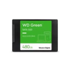
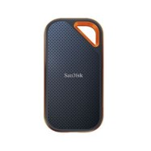
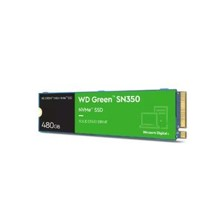
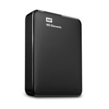
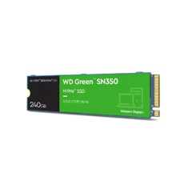
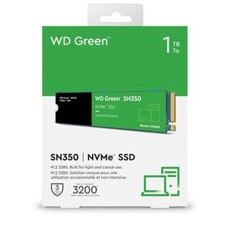
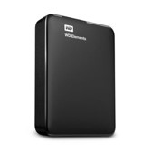
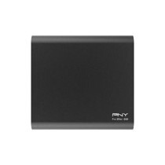

SSD WESTERN DIGITAL GREEN 480GB 2.5"
$ 113.900Si desea confiabilidad y un rendimiento rápido, los discos SSD WD Green mejoran la experiencia informática diaria en su equipo portátil o computadora de escritorio. Rendimiento mejorado para la informática diaria, Los discos WD Green SSD ligeros y resistentes a golpes no utilizan piezas móviles y proporcionan protección para sus datos en caso de golpes y caídas accidentales. Los discos WD Green SSD son compatibles con la mayoría de los equipos portátiles y las computadoras de escritorio y están disponibles en modelos M.2 2280 y de 2,5 pulgadas/7 mm para brindar una actualización sencilla y sin problemas.

SSD EXTERNO SANDISK EXTREME PRO 1TB
$ 103990Trabaja más rápido y por más tiempo Ahorra tiempo al almacenar y transferir datos con el chasis de aluminio forjado que también actúa como disipador térmico para ofrecer mayores velocidades sostenidas. Viaja sin inconvenientes la combinación de carcasa de silicona y chasis de aluminio forjado que ofrece un acabado superior y mayor protección. Lo suficientemente resistente como para llevarla contigo La protección contra caídas hasta dos metros, la resistencia al agua y al polvo con calificación IP555 y el práctico gancho de mosquetón para sujetarla a tu cinturón o mochila hacen que esta unidad sea lo suficientemente resistente como para llevarla a cualquier parte. Cifrado para mayor seguridad Mantén tu contenido privado con la protección con contraseña incluida con cifrado de hardware AES de 256 bits.4 Almacenamiento de calidad profesional De SanDisk®, la marca en la que confían fotógrafos profesionales de todo el mundo para sus mejores tomas en sus tareas más difíciles.

WESTERN DIGITAL SOLIDO SSD M.2 GREEN 480GB 2280 PCIE
$ 170900Disco Duro Interno Western Digital Solido SSD M.2 Green 480GB puede revitalizar su antigua computadora para el uso diario. Ya sea que esté en clase, de compras, conversando o navegando en la web, este disco puede trabajar hasta cuatro veces más rápido que los discos SATA. Debido a que los SSD no tienen piezas móviles, ofrecen un diseño resistente a los impactos que permite proteger los datos importantes contra golpes y caídas accidentales. El factor de forma delgado M.2 2280 permite actualizar cualquier computadora que tenga una ranura NVMe de manera rápida y sencilla. Además, el panel de control descargable del SSD de Western Digital le permite supervisar el estado de su disco para brindarle mayor tranquilidad. Capacidad: 480 GB Interfaz:PCIe Dimensiones (largo, ancho y alto): 3.16" x 0.87" x 0.09" Rendimiento de lectura secuencial: 2400MB/s Rendimiento de escritura secuencial: 1650MB/s NAND: TLC

DISCO DURO EXTERNO WD 1 TB ELEMENT
$ 225900Los discos duros portátiles WD Elementos, con USB 3.0 ofrecen almacenamiento fiable y de gran capacidad para llevar, velocidades ultrarrápidas de transferencia de datos, conectividad universal y una enorme capacidad para los usuarios que buscan un dispositivo asequible.

SSD WESTERN DIGITAL M.2 GREEN 240GB 2280 PCIE
$ 113900Capacidad: 240 GB Interfaz: PCIe Dimensiones (largo, ancho y alto): 3.16" x 0.87" x 0.09" Rendimiento de lectura secuencial: 2400MB/s Rendimiento de escritura secuencial: 900MB/s NAND: TLC

SSD WESTERN DIGITAL SOLIDO M.2 GREEN 1TB 2280 PCIE
$ 261900Las computadoras de escritorio y los equipos portátiles ganan un gran impulso gracias a los discos WD Green SATA SSD, ya que se diseñaron para mejorar las tareas diarias y la respuesta del sistema. Con la unidad en estado sólido M.2 vas a incrementar la capacidad de respuesta de tu equipo. Gracias a esta tecnología podrás invertir en velocidad y eficiencia para el inicio, la carga y la transferencia de datos. Más velocidad a tu alcance Este disco transfiere datos a través de sus interfaces PCIe 3.0 y NVMe 1.3, lo que te permite transmitir una mayor cantidad de información de una sola vez. Capacidad: 1 TB Interfaz: SATA III Rendimiento de lectura secuencial: 545MB/s

DISCO-DURO-EXTERNO-WD-2TB-ELEMENT_3
$ 297900FICHA TÉCNICA Descripción del producto Los discos duros portátiles WD Elementos, con USB 3.0 ofrecen almacenamiento fiable y de gran capacidad para llevar, velocidades ultrarrápidas de transferencia de datos, conectividad universal y una enorme capacidad para los usuarios que buscan un dispositivo asequible. Productos Similares. -44 %Disco Duro Externo Wd 1 Tb Element DISCO DURO EXTERNO WD 2 TB ELEMENT

SSD EXTERNO PNY 500GB PRO ELITE USB 3.1 GEN 2 TIPO-C
$ 340900El SSD portátil Pro Elite USB 3.1 Gen 2 Type-C es la próxima generación en almacenamiento móvil y cuenta no solo con una mayor capacidad de almacenamiento, sino también con un rendimiento excepcional. Está diseñado para ser una solución de almacenamiento móvil superior a las generaciones anteriores de SSD portátiles USB-A, así como a las unidades flash USB 3.0 tradicionales, lo que permite una transferencia y almacenamiento de archivos aún más rápidos sobre la marcha. Capacidad: 500GB Tipo de accionamiento: USB 3.1 Gen 2 Velocidad máxima de lectura secuencial: Hasta 890 MB/s Velocidad máxima de escritura secuencial: Hasta 880 MB/s
SSD EXTERNO PNY 1TB PRO ELITE USB 3.1 GEN 2 TIPO-C
$ 596900El SSD portátil Pro Elite USB 3.1 Gen 2 Type-C es la próxima generación en almacenamiento móvil y cuenta no solo con una mayor capacidad de almacenamiento, sino también con un rendimiento excepcional. Está diseñado para ser una solución de almacenamiento móvil superior a las generaciones anteriores de SSD portátiles USB-A, así como a las unidades flash USB 3.0 tradicionales, lo que permite una transferencia y almacenamiento de archivos aún más rápidos sobre la marcha. Capacidad: 1TB Tipo de accionamiento: USB 3.1 Gen 2 Velocidad máxima de lectura secuencial: Hasta 890 MB/s Velocidad máxima de escritura secuencial: Hasta 880 MB/s
✕

NIKE MODEL 1
Descripción Modelo 1
$ 130